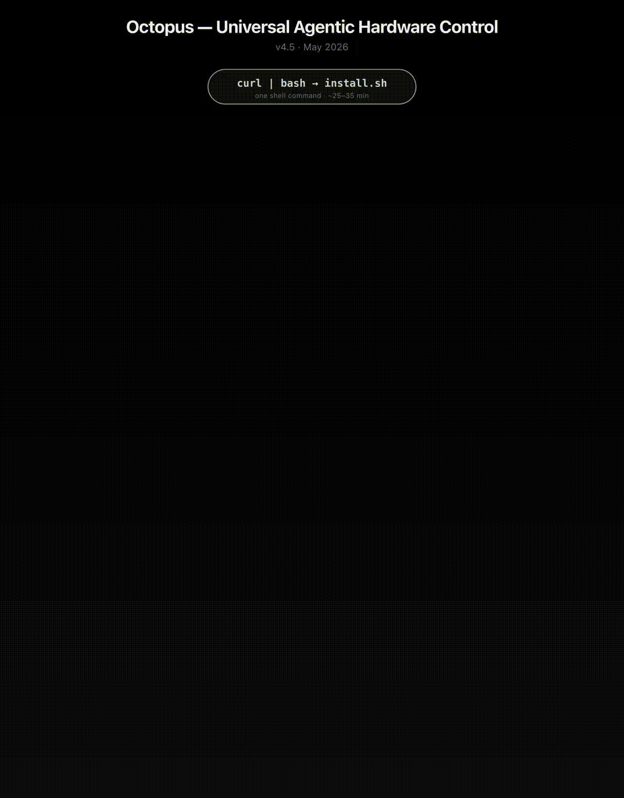

Octopus slide decks
The slides we presented at the MIT MAS.664 AI Studio Demo Day on May 7, 2026. The PPTX below is the final deck we presented from; a self-contained HTML version is also available below.
Final presentation deck
PPTX · 7 slidesCurated from the official MIT AI Studio shared deck. Open the original on Google Slides →
Slide 4 · live demo recording
open full size →
Slide 4 of the deck contains an animated GIF of the live Pi demo. The Office Online viewer above renders embedded GIFs as a still frame; the animation itself plays here.

Self-contained HTML deck
7 slides · ← / → to navigate · F for fullscreenA standalone HTML version we built earlier in the project. Loads its own assets, no third-party dependencies.